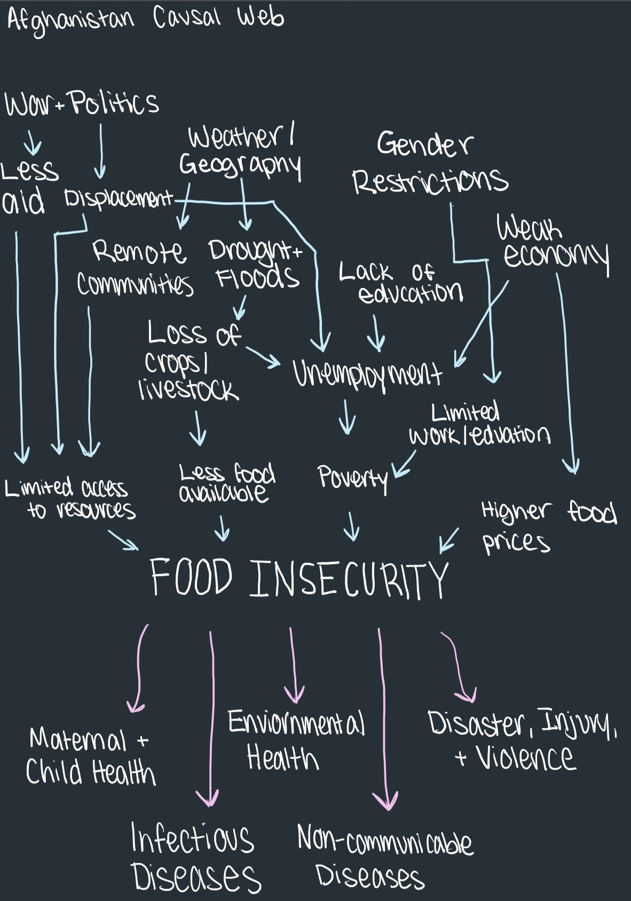
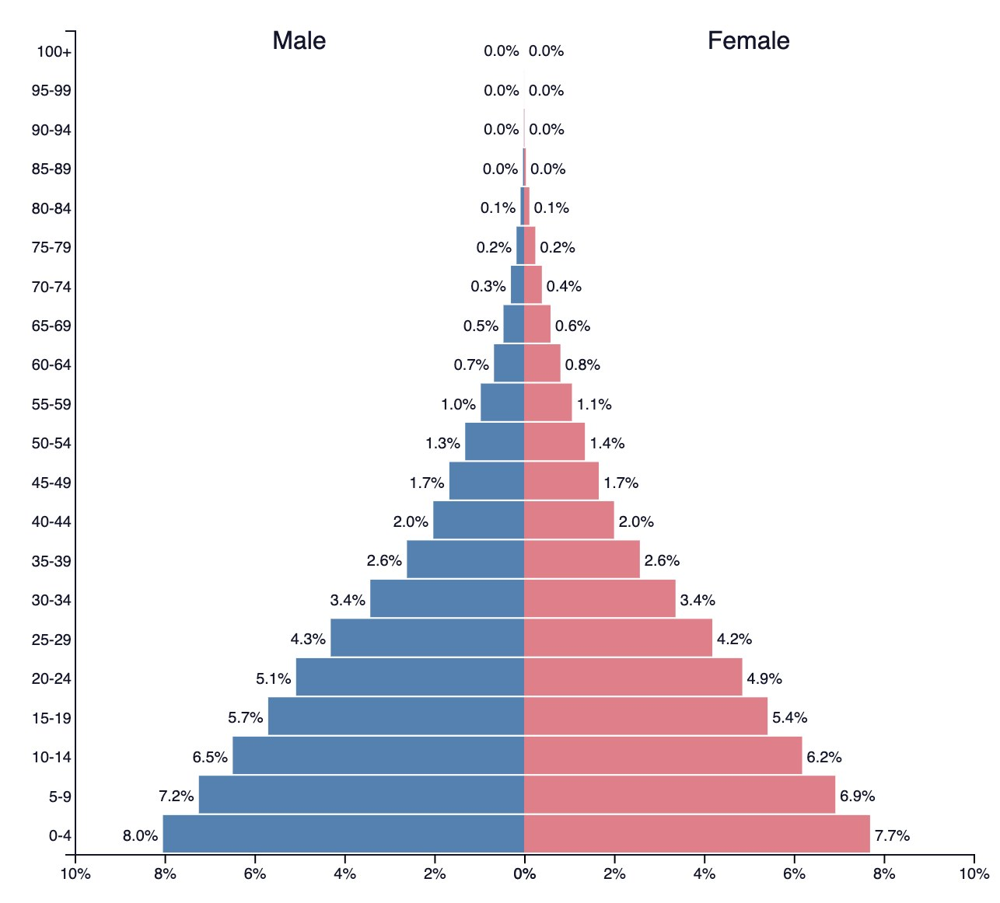
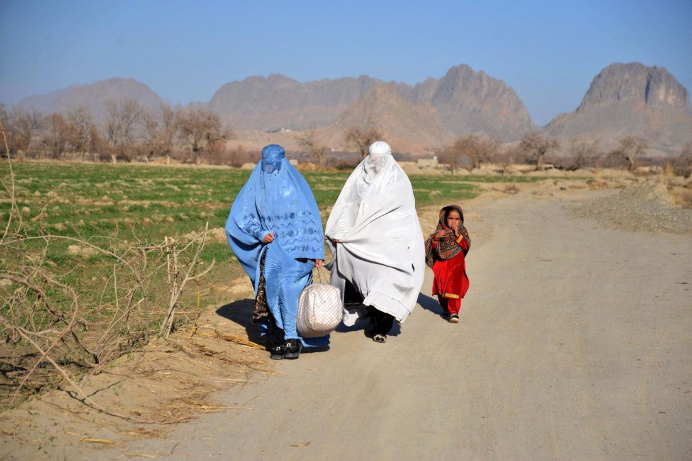
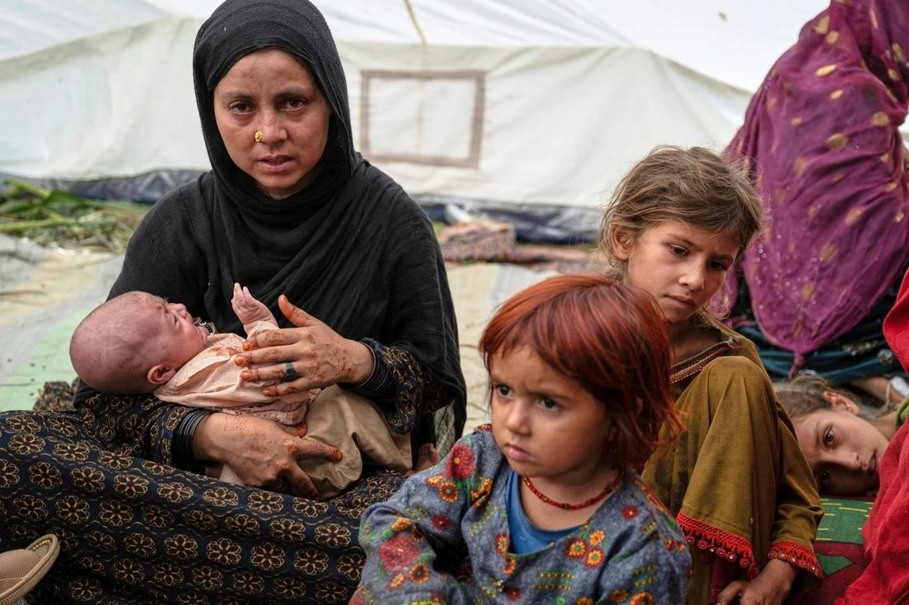
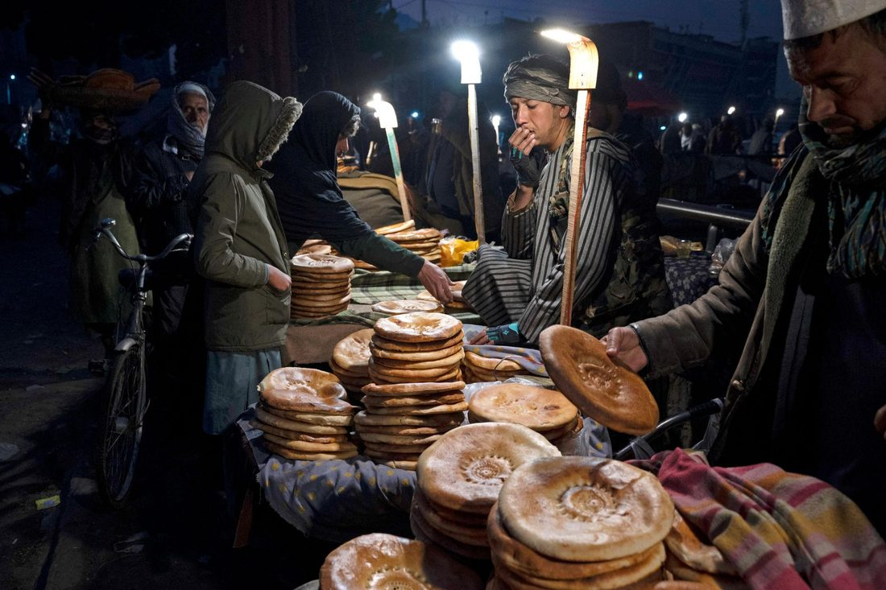
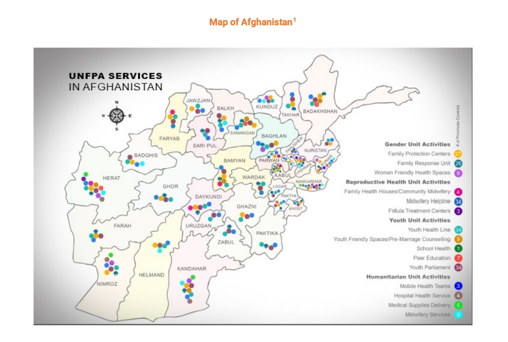
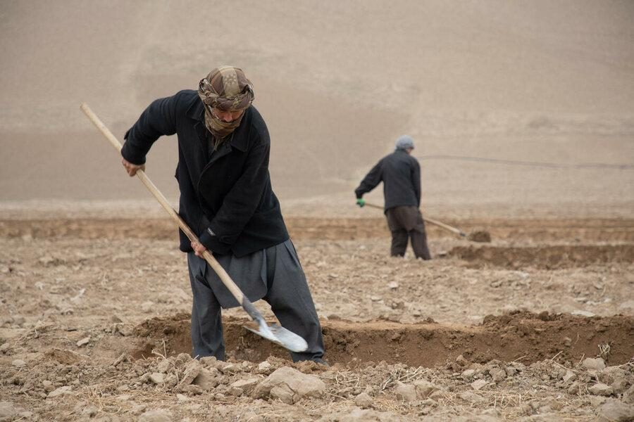
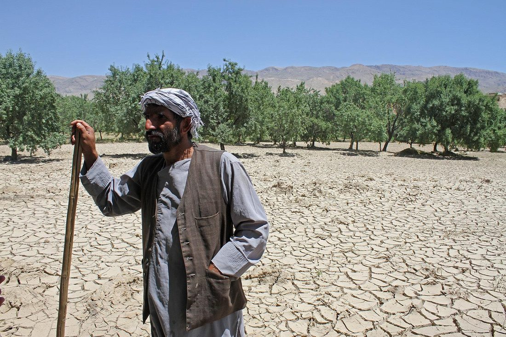

Home to approximately 45 million people, Afghanistan is a country rich in culture and history. However, years of conflict, economic instability, and environmental challenges have left many families struggling to access enough nutritious food.
Rising food prices and drought make it harder for families in Afghanistan to afford and grow nutritious food. An estimated 3.7 million children are affected by wasting, a form of malnutrition that causes children to weigh too little for their height. More than 1 million children face life-threatening acute malnutrition (UNICEF, 2026).
Over 1 millionchildren facing life-threatening acute malnutrition
Source: UNICEF (2026)
Acute food insecurity
19.2MPeople in Afghanistan are projected to face acute food insecurity during winter (2026-2027)
Rural households
45%reported that someone in their household had gone an entire day and night without eating during the previous month
Sources: IPC analysis via WFP (2026); Najam et al. (2023), 6,019 rural households
Problem statement: Food insecurity in Afghanistan limits families' reliable access to nutritious food, placing women and children at particular risk of malnutrition and related illness.
Causal Web

Section 02
Afghanistan Beyond the Headlines
Home to approximately 45 million people, Afghanistan is a country rich in culture and history. However, years of conflict, economic instability, and environmental challenges have left many families struggling to access enough nutritious food.
45MPeople in Afghanistan (2026 projection)
71%Living in Rural communities (2019)
37%Adult literacy rate (2021)
14.4MNeeding humanitarian health assistance (2026)
19.2MPeople in Afghanistan are projected to face acute food insecurity during winter (2026-2027)
People and Culture
Afghanistan is home to diverse ethnic communities, including Pashtuns, Tajiks, Uzbeks, and Hazaras. Dari and Pashto are the official languages, and Islam is the predominant religion. Many families live in rural communities and depend on agriculture for their livelihoods, making them particularly vulnerable to drought and food shortages.

Population by age and sex, 2026. The broad base reflects a very young population. Source: PopulationPyramids (UN World Population Prospects 2024).
Challenges Behind the Numbers

Restrictions on Women
Since the Taliban returned to power in 2021, restrictions on women's education and employment have limited opportunities for financial independence, making it harder for some households to meet their basic needs.

Conflict and Displacement
Decades of conflict and continued political instability have disrupted trade and access to essential resources. Displacement places additional pressure on already vulnerable communities.

Economic Hardship
Afghanistan is classified as a low-income country. Limited employment opportunities, rising food prices, and declining foreign aid make it difficult for families to afford nutritious food.
How Geography Contributes to Hunger
Afghanistan's mountainous landscape and dry climate creates significant challenges for agriculture and food distribution. Frequent droughts and water shortages reduce crop production, while remote villages often face difficulties accessing markets and essential supplies. For rural families who rely on farming, these environmental challenges can threaten both their income and access to food.

Map of Afghanistan. Source: United Nations Population Fund (UNFPA, 2021).


Food Insecurity Is More Than a Lack of Food Food insecurity in Afghanistan is not simply a matter of food availability. For millions of families, poverty, political instability, and environmental challenges make it difficult to consistently access nutritious meals. These barriers create a cycle in which limited resources and opportunities threaten both health and well being. Understanding the causes of hunger is the first step toward creating lasting change.
Banner photo hereSection 03
Infectious Disease
Infectious diseases remain a major cause of illness and death in Afghanistan, especially among children and women with limited access to healthcare. Between December 29, 2024, and July 12, 2025, the WHO reported 840,374 cases of pneumonia and 1,871 deaths.
Acute watery diarrhea with dehydration caused 78,972 cases and 35 deaths in the same period.
Two infections, one six-month window
Afghanistan, Dec 29, 2024 – Jul 12, 2025
840,374cases of pneumonia (acute respiratory infection) · 1,871 deaths
78,972cases of acute watery diarrhea with dehydration · 35 deaths
Source: World Health Organization (2025b)
Why infections keep spreading
Low vaccinationToo few people are protected against disease
DisplacementMoving populations are harder to reach and protect
Unequal accessNot everyone can reach health services
MalnutritionRaises infection risk, especially measles in young children
Funding shortagesClinics closed and water systems left unrepaired
TuberculosisMeaslesMalariaPolio
1 of 2 countries where wild polio is still endemic
Source: World Health Organization (2025b)
Tuberculosis, measles, malaria, and polio are also major threats, and Afghanistan is one of only two countries where wild poliovirus is still endemic. Low vaccination coverage, displacement, unequal access to health services, and malnutrition make these diseases hard to control. Funding shortages have also closed health facilities and left water systems unrepaired.
Banner photo hereSection 04
Non-communicable Diseases
Many non-communicable diseases can root from poor food quality, or lack of access to food. In a study, 42.8% of the participants were overweight or obese, 82.6% of the participants had inadequate intake of vegetables and fruits, etc. Subsequently, 18% of the participants had elevated cholesterol, 25% had high blood pressure, etc. Among these are pre-sets to other communicable and non-communicable diseases.
Non-communicable diseases
43%of deaths nationwide are from heart disease, diabetes, cancer, and chronic lung diseases
Heart disease, diabetes, cancer, and chronic lung diseases account for approximately 43% of deaths nationwide in Afghanistan.
Cardiovascular disease
40,000deaths annually from cardiovascular disease
Cardiovascular disease alone causes more than 40,000 deaths annually.
Mental health
1 in 5people suffering from mental illness in Afghanistan
Mental health conditions add to this burden, affecting an estimated one in five Afghans.
Banner photo hereSection 05
Maternal and Child Health
Child malnutrition is a major issue in Afghanistan, with an estimated 3.7 million children suffering from wasting and over 1 million suffering from acute, life-threatening malnutrition
Child malnutrition
3.7 millionchildren affected by wasting
Over 1 millionchildren facing life-threatening acute malnutrition
Environmental risks, such as droughts, lack of clean water, and high air pollution can lead to many unfavorable conditions that make it hard for people to grow produce, have access to water, and raise livestock. All of these could lead to other diseases, whether communicable or non-communicable. Without clean water and environment, people aren't able to grow crops in order to produce food for themselves and their families. Additionally, the pollution in the air would decrease the nutritional content of the fresh fruit and vegetables. Humans, and livestock, need a sufficient amount of water to survive.
Environmental risks
26%of all deaths in Afghanistan are due to environmental risks
26% of all deaths in Afghanistan to environmental risks
Clean water
10,000deaths annually due to lack of clean water
Air pollution
Deaths annually
Household air pollution27,000
Ambient air pollution11,000
Banner photo hereSection 07
Disaster, Injury, and Violence
Disaster, Injury, and Violence
In UN interviews with more than 190 people affected by war in Afghanistan, 95% reported psychological harm or trauma-related symptoms, and 60% reported lasting physical effects that affected daily life. Floods can also make it harder to get nutritious food. One study linked flooding to lower intake of vitamin A, vitamin C, and iron (UN News, 2026; Oskorouchi, 2021).
What people affected by war reported
Psychological harm or trauma-related symptoms95%
Lasting physical effects that affected daily life60%
Source: UN News (2026) · Interviews with more than 190 people in Afghanistan
Banner photo hereSection 08
What You Can Do to Help
How NGOs Can Help
NGOs can partner with local organizations to distribute nutritious food and bring mobile clinics to rural communities. With more than 1 million children facing life-threatening acute malnutrition, these clinics can screen children and connect them to treatment (UNICEF, 2026). NGOs can also help farmers maintain irrigation systems so they can keep growing food during dry periods.
Mobile clinicsBring malnutrition screening and treatment to rural communities.
Irrigation supportHelp farmers access water for crops during dry periods.
Sources
References
Akseer, N., Rizvi, A., Bhatti, Z., Das, J. K., Everett, K., Arur, A., Chopra, M., & Bhutta, Z. A. (2019). Association of exposure to civil conflict with maternal resilience and maternal and child health and health system performance in Afghanistan. JAMA Network Open, 2(11), e1914819. https://doi.org/10.1001/jamanetworkopen.2019.14819
Alemi, S., Nakamura, K., Seino, K., & Hemat, S. (2022). Status of water, sanitation, and hygiene and standard precautions in healthcare facilities and its relevance to COVID-19 in Afghanistan. Environmental Health and Preventive Medicine, 27(0), 6–6. https://doi.org/10.1265/ehpm.21-00272
Hahad, O. (2024). Burden of disease due to air pollution in Afghanistan—Results from the global burden of disease study 2019. International Journal of Environmental Research and Public Health, 21(2), 197. https://doi.org/10.3390/ijerph21020197
Hamdam, P., Pant, S., & Rahmani, F. A. (2025). Maternal health under the Taliban in Afghanistan: Current status and challenges. BMC Pregnancy and Childbirth, 25(1). https://doi.org/10.1186/s12884-025-08458-3
Jewkes, R., Corboz, J., & Gibbs, A. (2018). Trauma exposure and IPV experienced by Afghan women: Analysis of the baseline of a randomised controlled trial. PLoS ONE, 13(10). https://doi.org/10.1371/journal.pone.0201974
Najam, W., Ibiyemi, T., Aziz, S., Najam, R., Gichohi-Wainaina, W. N., & Oldewage-Theron, W. (2023). Social determinants of rural household food insecurity under the Taliban regime. Nutrients, 15(7), Article 1681. https://doi.org/10.3390/nu15071681
Oskorouchi, H. R., & Sousa‐Poza, A. (2021). Floods, food security, and coping strategies: Evidence from Afghanistan. Agricultural Economics, 52(1), 123–140. https://doi.org/10.1111/agec.12610
Spagnolello, O., Gatti, S., Shahir, M. A. A., Afzali, M. F., Portella, G., & Baiardo Redaelli, M. (2022). Civilian war victims in Afghanistan: Five-year report from the Kabul Emergency Ngo Hospital. European Journal of Trauma and Emergency Surgery, 49(3), 1401–1405. https://doi.org/10.1007/s00068-022-02137-0
We are students in SAR HS325: Introduction to Global Health with Professor Bria Dunham. We created this site to raise awareness about food insecurity in Afghanistan.
AL
Arcadia Li
The Problem · Disaster, Injury & Violence · How You Can Help
Add a short bio here.
AM
Amani Multani
Afghanistan Beyond the Headlines
Add a short bio here.
BH
Brenda He
NCDs · Maternal & Child Health · Environmental Health